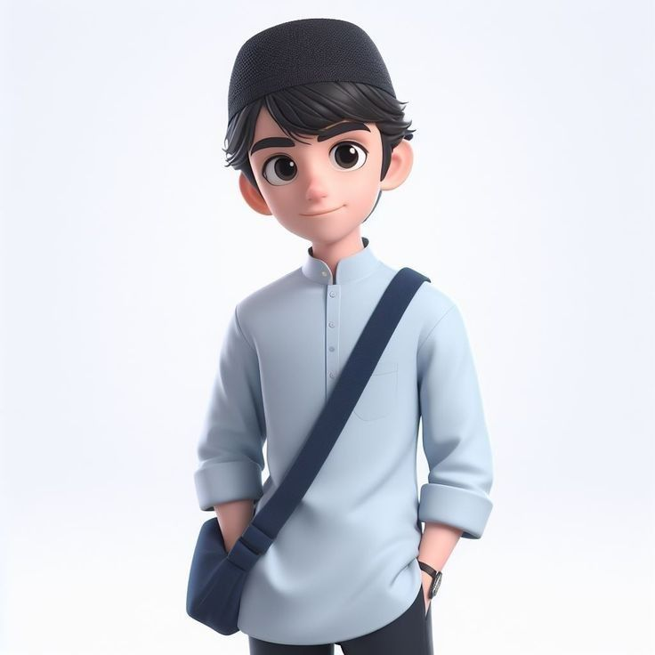
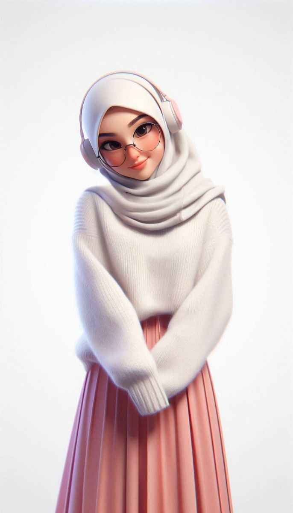

Tempat nyaman, aman, dan bersahabat untukmu yang mencari hunian ideal.
Selamat datang di kos berkah, hunian yang menghadirkan kenyamanan seperti di rumah sendiri. Kami berkomitmen menyediakan tempat tinggal yang bersih, aman, dan strategis untuk mahasiswa maupun pekerja.
Profil Pemilik
Profil Singkat

Rafi pratama
Jabatan: Pemilik Utama Kos
No. Telepon: 0812-3456-7890
Email: rafi.pratama@ example.com
Alamat: Jl. Mawar Indah No. 12, Kecamatan Lowokwaru, Kota Malang
Deskripsi singkat:
Rafi adalah sosok yang berdedikasi dalam menyediakan hunian nyaman dan aman bagi mahasiswa. Ia memastikan fasilitas kos selalu terjaga dan lingkungan tetap bersih serta kondusif.
Profil Singkat

Dwi Lestari
Jabatan: Manajer Operasional Kos
No. Telepon: 0851-2345-6789
Email: dwi.lestari@ example.com
Alamat: Jl. Kenanga No. 21, Kecamatan Lowokwaru, Kota Malang
Deskripsi singkat:
Dwi bertanggung jawab atas pengelolaan harian kos, termasuk pelayanan penghuni dan pemeliharaan fasilitas. Ia dikenal ramah dan selalu siap membantu para penyewa.